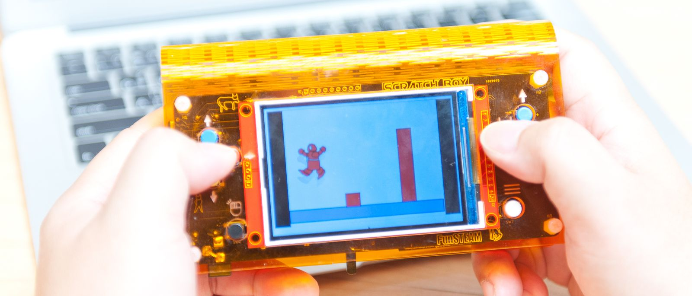
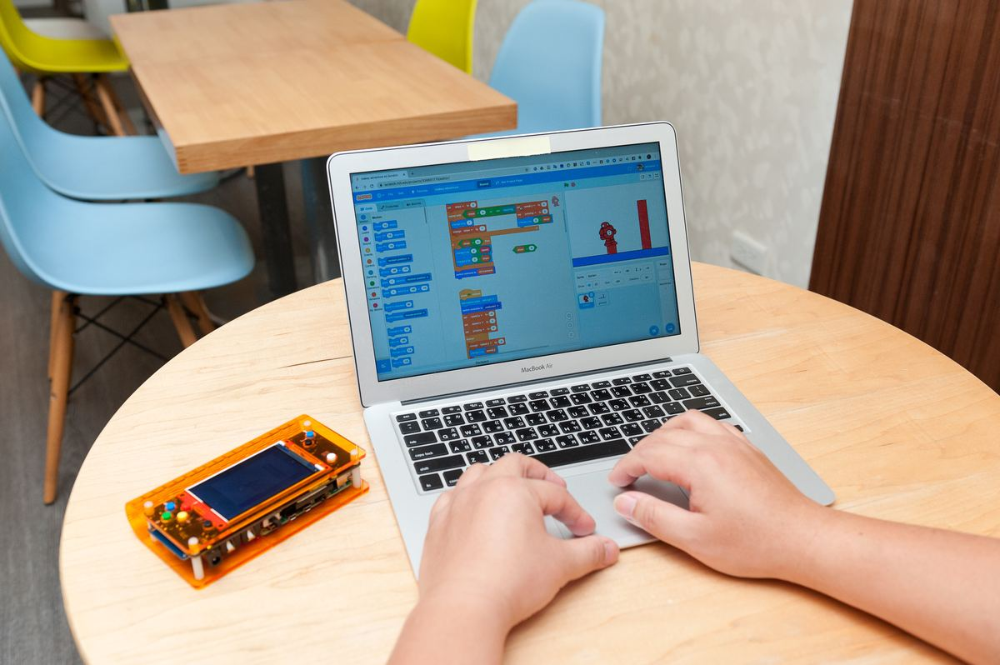
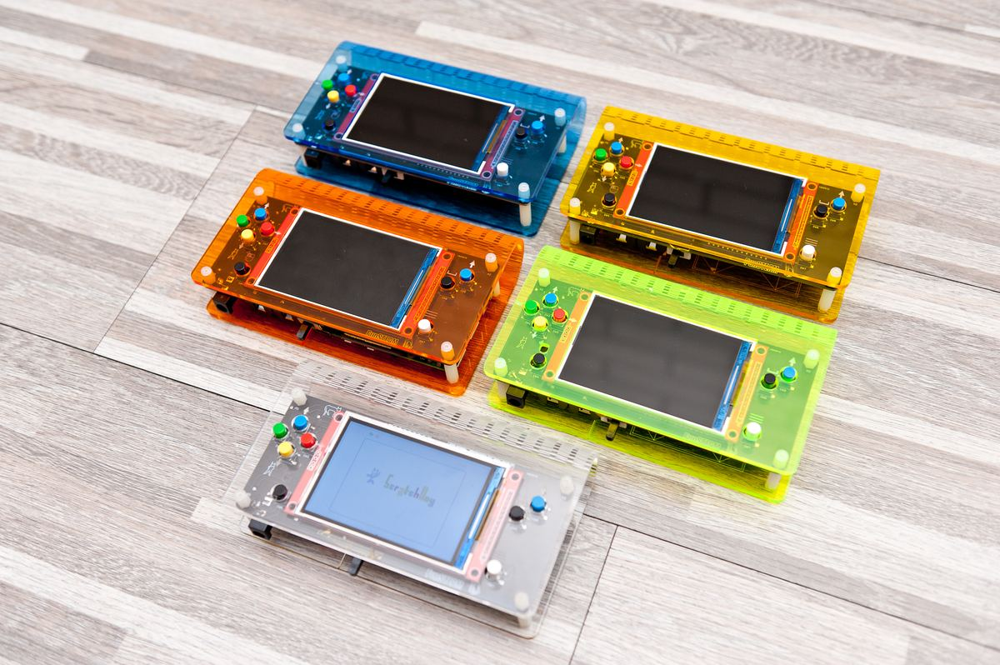
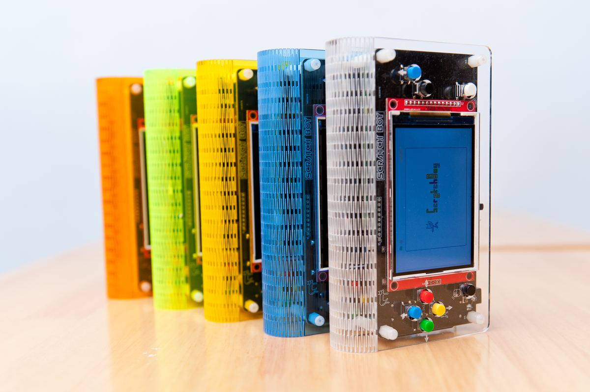
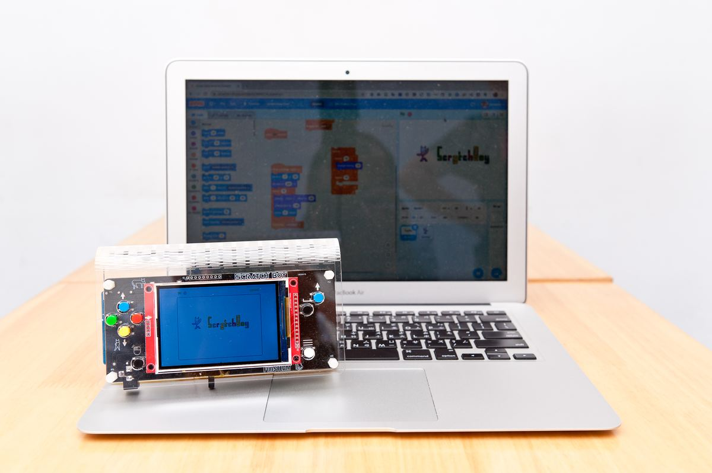
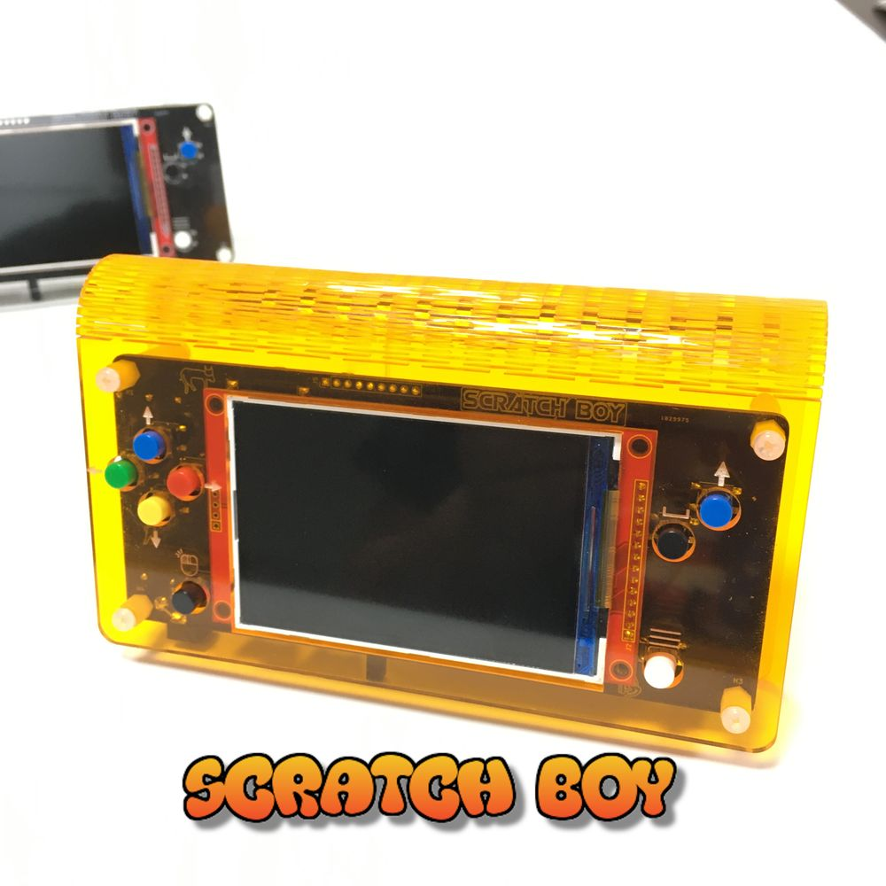

🎒遊戲帶著走
Scratch 3 化身遊戲機，專案檔存在機器裡，不必守在電腦前。
可以自己設計遊戲的手持遊戲機。把 Scratch 3 從電腦裡搬出來，裝進一台拿在手上的掌機。玩別人的遊戲，也玩自己做的遊戲，玩到一半還能回去改程式。

我會自學程式，是因為小時候玩過電腦遊戲，讚嘆它的豐富與好玩；後來走上工程師這條路，也是因為想徹底搞懂遊戲機是怎麼運作的。
Scratch 是現在兒童程式課最常見的平台。剛接觸時以為它只是給小朋友的入門語言，實際寫下去才發現複雜度可以做得很高。我試著用 Scratch 復刻幾款小時候的經典遊戲，還原度幾乎到 100%。
剩下的限制只有一個：Scratch 遊戲只能在電腦前面玩。所以 Scratch Boy 不只是一台遊戲機，而是想讓自己寫的遊戲有一個更酷的舞台，讓「做遊戲」本身變成學程式的動機。

Scratch 3 化身遊戲機，專案檔存在機器裡，不必守在電腦前。
透過 WiFi 同步 Scratch 工作坊，電腦上改完，掌機上馬上玩到新版本。
Scratch 社群有來自全世界的遊戲，每一款都能打開來看、拿來改，學遊戲設計的最好教材。
保留 HDMI 輸出，教室裡可以直接投到大螢幕上示範。
集資企劃階段的概念機規格，以現成模組組合實現。
| 螢幕 | 3.5 吋 SPI LCD |
|---|---|
| 主機 | Raspberry Pi，預載 Scratch Boy 團隊整合的 SGC OS |
| 按鍵 | 上、下、左、右、空白鍵、第二上鍵、功能鍵、單擊鍵（對應成 Scratch 常用的鍵盤按鍵） |
| 網路 | WiFi，連接 Scratch 工作坊同步遊戲 |
| 聲音 | 1W 單聲道喇叭 |
| 影像輸出 | HDMI，可外接大螢幕 |
| 電池 | 內建鋰電池座，2 串保護板，充電平衡保護 |
| 電源 | 5.1V / 2.5A，或 8.4V 鋰電池充電器 |
| 外殼 | 雷切透明壓克力疊層，多種顏色；另有 3D 列印外殼版本 |
Scratch 3 原本是給桌機瀏覽器用的。要讓它在一台小掌機上開機即玩，背後要串起好幾層：
Raspberry Pi 開機要一段時間，所以由一顆 ATmega32U4 在通電瞬間先搶下 SPI、點亮螢幕；等 Pi 準備好，它執行 SPI.end() 把腳位交還，由 fbcp 接手。交棒沒做好就會 DMA 衝突，這是整台機器最精巧也最容易踩雷的地方。
Scratch 遊戲讀的是鍵盤。GPIO 按鍵經 Python 寫的 gpiokey 服務，透過 Linux uinput 模擬成真正的鍵盤事件；哪顆實體鍵對到哪個按鍵，可以在內建的設定網頁上改。
fbcp-ili9341 把 Pi 的畫面複製到 SPI 螢幕。它依賴舊版 DispmanX API，新版系統要改用 Fake KMS 並強制產生 framebuffer 才會有畫面。




計畫啟動，畫下第一張發想草稿。
初代樣品機軟硬體整合成功，帶去 Maker Faire Taipei 2019 試玩，反應熱烈。
加入設定頁：按鍵對應、Scratch 工作坊 ID，改用 lighttpd 跑 CGI。
外殼試做與軟硬體再整合，準備集資：先以概念機推廣理念，達標後再研發二代機與出版課程。
產品攝影與遊戲錄影。
自己畫 KiCad 主板、手焊打樣。
主板持續改版到 v1.5。
整理 v1.4 系統的部署筆記，寫成無人值守的自動部署腳本。
Scratch Boy 有我最喜歡的精簡外型，但 Raspberry Pi 跑完整瀏覽器的耗電太高，原本的電池撐不住，改用 18650 之後外型就走樣了。當年的 Scratch 也還沒為這種小機器最佳化。
這些經驗直接決定了下一代的方向：換成省電、開機即用的 RP2040 微控制器，從 MakeCode Arcade 起步，再一路長成能跑 Doom、模擬器與原生遊戲的生態系。